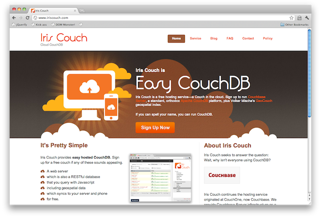

CouchDB, package managers, and npm
Define: Package manager
A collection of software tools to automate the process of installing, upgrading, configuring, and removing software packages for a computer's operating system in a consistent manner.
It typically maintains a database of software dependencies and version information to prevent software mismatches and missing prerequisites.
Packages also contain metadata, such as the software's name, description of its purpose, version number, vendor, checksum, and a list of dependencies necessary for the software to run properly. Upon installation, metadata is stored in a local package database.
Package manager ecosystem
-
RPM Package Manager (rpm)
Originally the Red Hat Package Manager, now included in many GNU/Linux distributions.
-
Yellowdog Updater (yum)
An RPM compatible CLI package manager with metadata managed through XML or SQLite.
-
Advanced Packaging Tool (apt)
Handles installation and removal of core libraries on Debian and other Linux Distributions
-
Debian Package (dpkg)
Base software for the Debian package management system used to install, remove, and provide information about .deb packages
Package manager ecosystem
Ruby Gems
Package manager for the Ruby language. Gemspec files are actual Ruby code.
version = File.read(File.expand_path("../RAILS_VERSION",__FILE__)).strip
Gem::Specification.new do |s|
s.platform = Gem::Platform::RUBY
s.name = 'rails'
s.version = version
s.summary = 'Full-stack web application framework.'
s.description = 'Ruby on Rails is a full-stack web framework optimized ...'
s.required_ruby_version = '>= 1.8.7'
s.required_rubygems_version = ">= 1.3.6"
# ....
end
Pip
pip is a tool for installing and managing Python packages, such as those found in the Python Package Index. It’s a replacement for easy_install.
Django
A high-level Python Web framework that encourages rapid ...
http://media.djangoproject.com/releases/1.3/Django-1.3.1.tar.gz
Django Software Foundation
ee5b4855c56f54f5d74d51b7bafd566d56165210
1.3.1
Pear
PEAR is a framework and distribution system for reusable PHP components.
facepalm
NuGet
NuGet is a free, open source developer focused package management system for the .NET platform intent on simplifying the process of incorporating third party libraries into a .NET application during development.
double facepalm
Good enough right?
Maybe not

And package managers...
So what doesn't work?
Metadata
Dependency management
Accessibility of Tools
Replication
And there was much rejoicing
node package manager

Thou shall make metadata human readable.
npm-flavored package.json
{
"name": "winston",
"description": "A multi-transport async logging library for Node.js",
"version": "0.5.6",
"author": { "name": "Charlie Robbins", "email": "charlie@nodejitsu.com" },
"contributors": [
{ "name": "Matthew Bergman", "email": "mzbphoto@gmail.com" },
{ "name": "Marak Squires", "email": "marak@nodejitsu.com" }
],
"repository": {
"type": "git",
"url": "http://github.com/indexzero/winston.git"
},
"keywords": ["logging", "sysadmin", "tools"],
"dependencies": {
"async": "0.1.x",
"colors": "0.x.x",
"eyes": "0.1.x",
"loggly": "~0.3.7",
"pkginfo": "0.2.x",
"stack-trace": "0.0.x"
},
"devDependencies": {
"vows": "~0.5.11"
},
"main": "./lib/winston",
"scripts": {
"test": "vows --spec --isolate"
},
"engines": {
"node": "~0.4.0"
}
}
Thou shall support conflicting dependencies.
{cwd}/node_modules/*
(your-app)
|
`-- foo@1.x.x
| |
| ` buzz@2.x.x
`-- bar@1.x.x
|
` buzz@1.x.x
There is no global version of buzz that will work for foo and bar
{cwd}/node_modules/*
So how would npm handle this?
/your-app
/node_modules
/foo@1.x.x
/node_modules
/buzz@2.x.x
/bar@1.x.x
/node_modules
/buzz@1.x.x
In the Ruby world, this is would be referred to as "vendored by default".
Thou shall reuse tools whenever possible.
Thou shall replicate binary and metadata.
Replication: Don't make me think
Most other package managers have a very poor concept of replication.
At best, replication happens, but it is across separate protocols / formats / religions.
In the npm registry, both the metadata and the binary data are stored in CouchDB.
Binary data is stored as CouchDB attachments.
Keep in mind replication **may fail** so you should probably use something like https://github.com/mikeal/replicate.
Thou shall do live demos in every presentation.
Setup fully-replicated npm

require('questions').ask(Date.now);
This presentation is Open Source software.
-
All software is available under the MIT license.
-
All content is available under Creative Commons Share-Alike no-attribution commercial ok.
-
Special thanks to Deck.js for making a killer open-source front-end: http://imakewebthings.github.com/deck.js
←
→
/
#